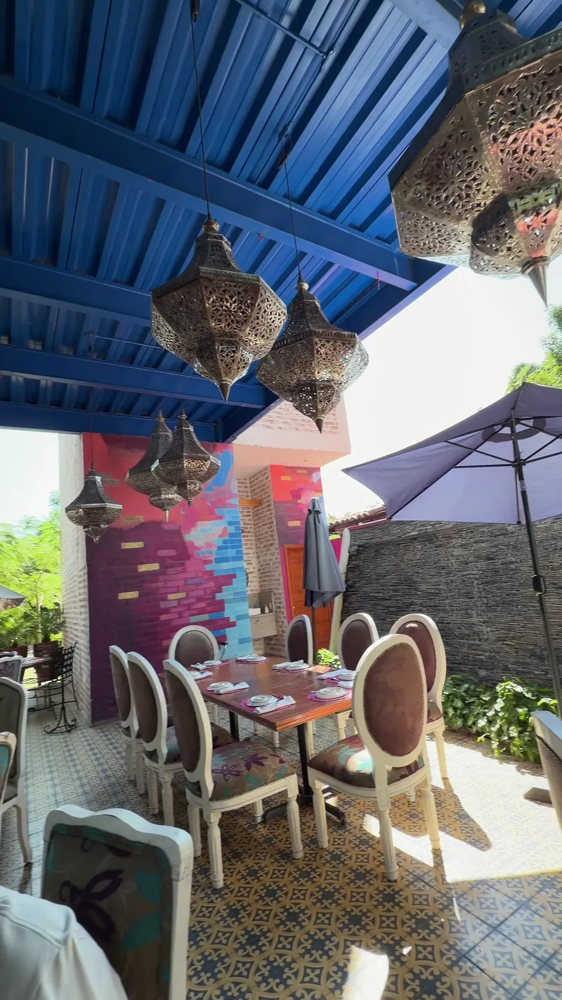
Malecón Nte.Calvillo · Ags.
Mesa larga en elMalecón de Calvillo.
Cocina mexicana de autor, dentro de Casa Bugambilias.
Abierto de martes a domingo
Empieza con totopos y molcajete.
Se come bien entre $200 y $300 por persona.
-
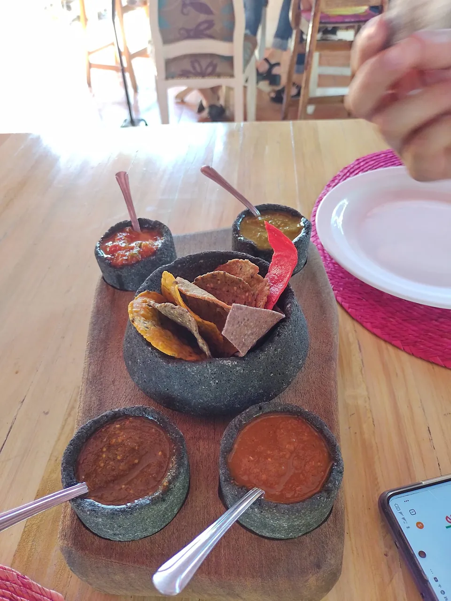
Entrada de TotoposCon salsas en molcajetePregunta el precio -
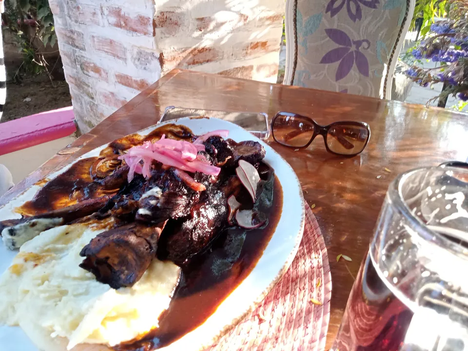
MoleDe los más pedidos en GooglePregunta el precio - CabritoDe los más pedidos en GooglePregunta el precio
- CochinitaDe los más pedidos en GooglePregunta el precio
- Tacos de pato al pastorLos menciona TripadvisorPregunta el precio
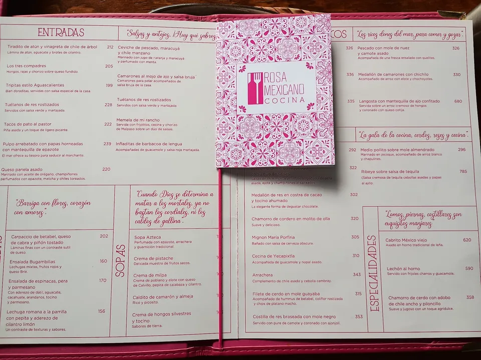
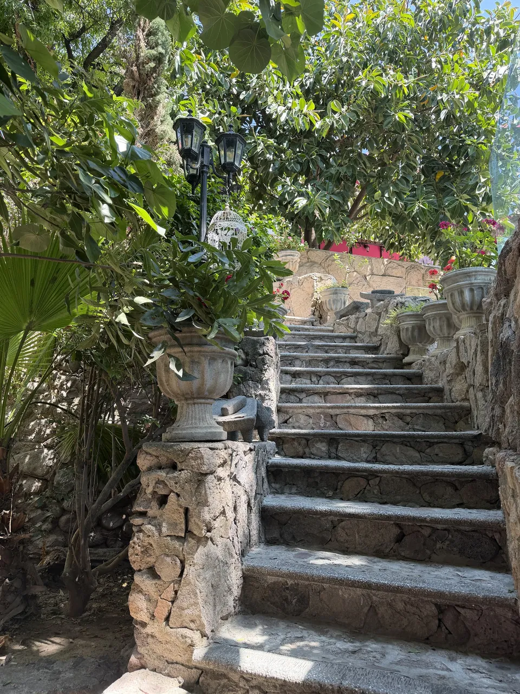
Escalera.
Piedra.
Jardín.
Elige tu rincón y avísanos.
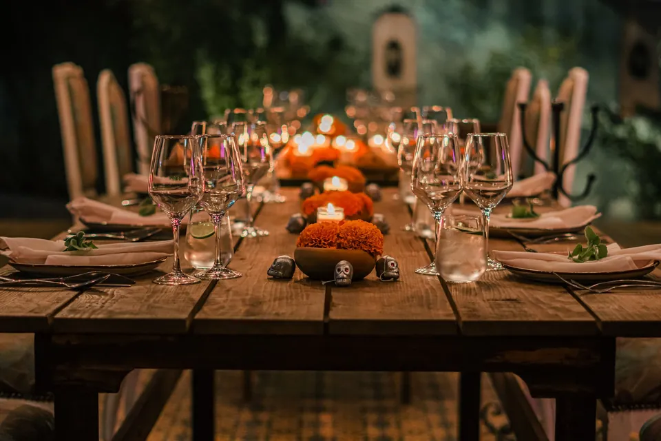
Mesa larga con velasPara llegar en grupo.
El primero de 55 en Calvillo.
4.9en Tripadvisor
652 opiniones
#1 de 55 en Calvillo
4.6en Google Maps
1,414 opiniones
Hermoso lugar. La atención muy amable. Lo recomiendo al 100%.
Nos encantó el lugar. Muy fresco, agradable, la música ambiental perfecta y la comida deliciosa.
Estuvo increíble, a pesar de que estaba lloviendo y no había nadie, nos atendieron con toda la actitud y la comida estuvo deliciosa.
Comimos fenomenal! Comida típica mejicana, todo delicioso. Muy bien presentado, platos abundantes y bien hechos.
Extraordinario lugar, excelente atención y comida riquísima, un lugar imperdible.
Excelente ambiente y muy bonito el restaurante. Juan Pablo nos atendió y fue muy atento.
Este lugar es ideal para probar sabores mexicanos.
Lo que llega a tu mesa.
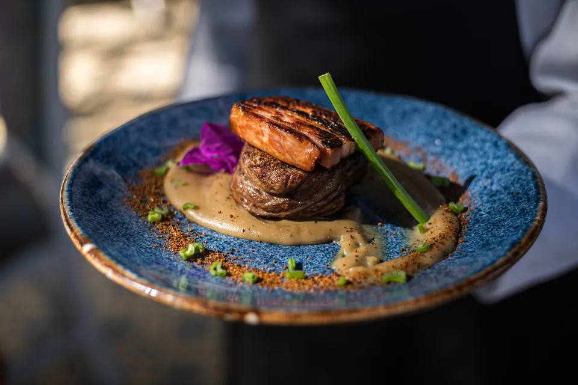
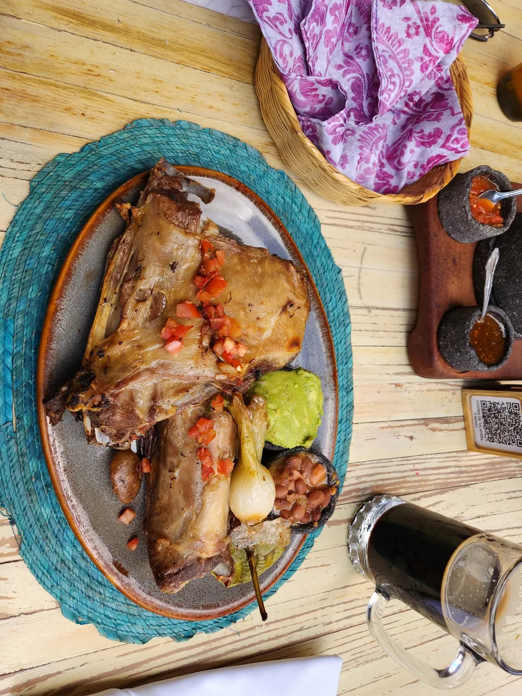
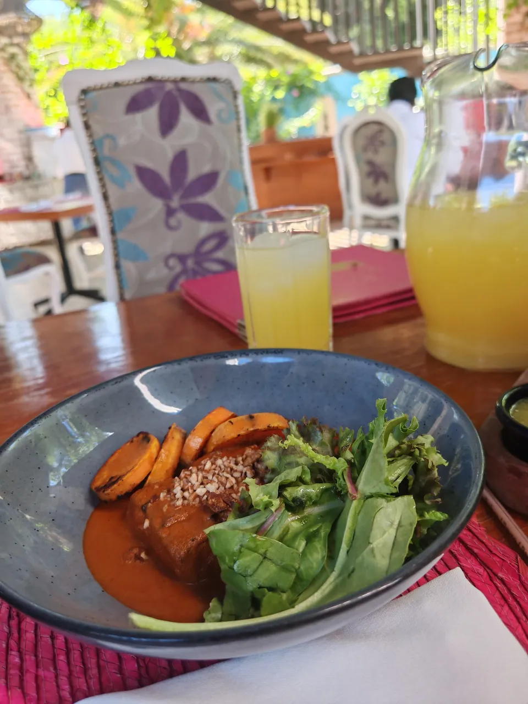
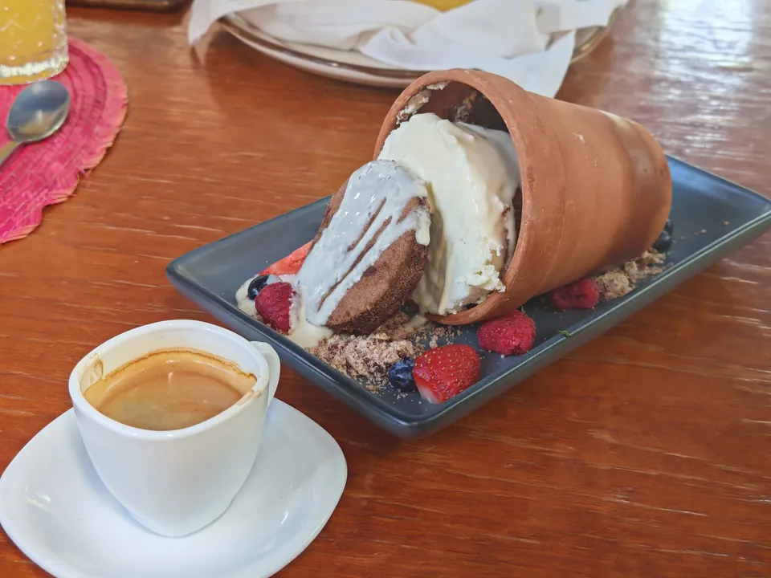
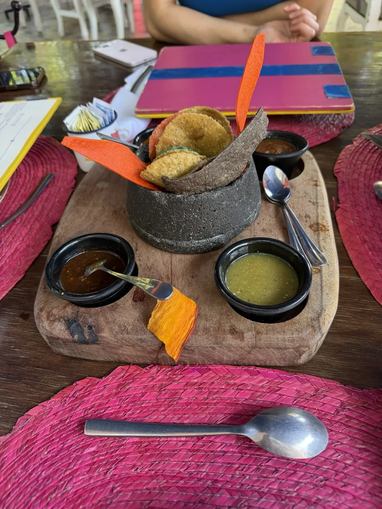
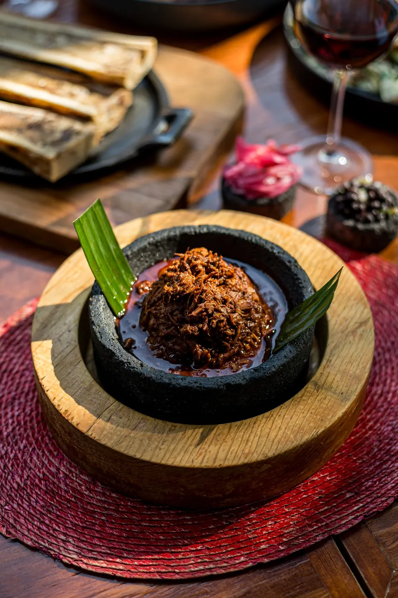
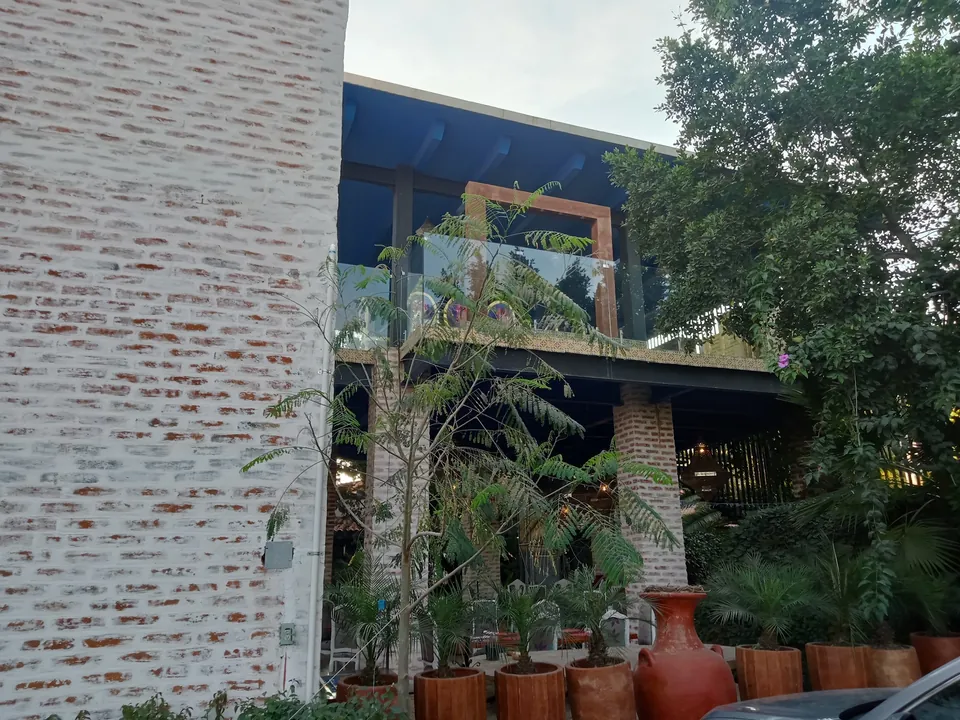
Una casa con jardín, tres cocinas.
Rosa Mexicano es uno de los tres restaurantes del hotel boutique y spa. Cocina de autor del chef Sergio Loera.
- Hotel boutique
- Spa
- Tres restaurantes
Malecón Norte, ven por tu mesa.
Malecón Nte., López Mateos20802 Calvillo, Aguascalientes
Abierto de martes a domingo
| Lunes | Cerrado |
|---|---|
| Martes | 9:00 a.m. a 10:00 p.m. |
| Miércoles | 9:00 a.m. a 10:00 p.m. |
| Jueves | 9:00 a.m. a 10:00 p.m. |
| Viernes | 9:00 a.m. a 10:00 p.m. |
| Sábado | 9:00 a.m. a 10:00 p.m. |
| Domingo | 9:00 a.m. a 6:00 p.m. |
Todo listo para completar.
Pásanoslo por el mismo chat donde te llegó esta muestra.
- WhatsApp de reservacionesConfirmar si el 495 956 0095 recibe mensajes.
- Logo en altaPara el encabezado y la imagen al compartir.
- Carta con preciosPara quitar los "Pregunta el precio".
- Horario confirmadoHay dos versiones: cierre a las 9 o a las 10 p.m.
- Fotos del hotel, spa y platos nuevosY su Instagram, si tienen.